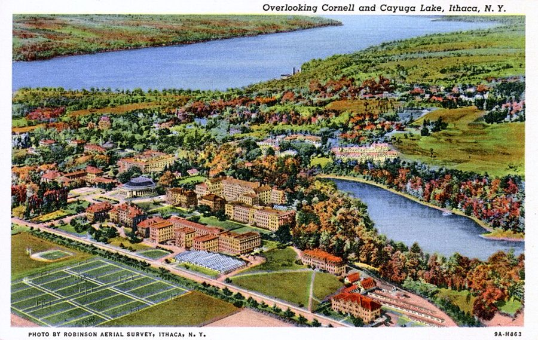
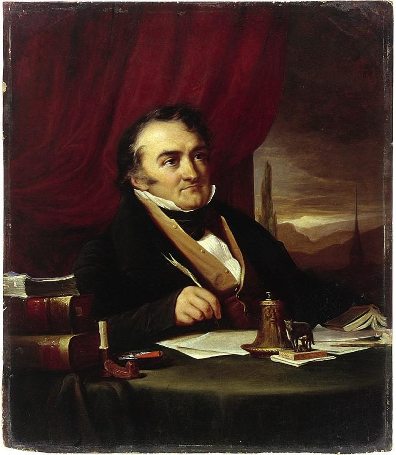

这一页在做什么
接上一页：他结了婚，有了儿子，1965 年秋到康奈尔当助理教授。这一页三十五到三十八岁，十二封信，全是他写出去的。三条线：拖了多年的博士论文怎么活过来；给老学生、老同事讲学术界里的规矩；黑人院校和降分录取。婚姻和迟迟不说话的儿子，多半在串场文字里。读到最后，他辞了康奈尔。
1966 1967 1968 1969
人在哪
康奈尔，助理教授
暑期班
博士论文
旧题
学法语
重写
委员会来回修改
答辩
Ike Ralph Rey 和 Frances Hal Riesman Nort Bronfenbrenner Harberger George
本站示意图。一个圆点是一封信，按信上的日期画。论文那一条的分段是照信和串场文字估的；答辩在 1968 年，哪一天书里没说，图上只是大致位置。1967 年 4 月到 11 月没有信，那几个月的事都在串场文字里。

从空中看康奈尔和 Cayuga 湖，早年的明信片，比这些信早得多。给 Rey 和 Frances 的信里说的 Ithaca 小城，就是湖边这一带。Robinson Aerial Survey, Ithaca，公有领域，维基共享资源 这一页的信短，串场长。论文怎么绕回原题、那通劝他离婚的电话、Hamilton 教授的一席话，都只在串场文字里，是 2007 年的口气。信里的他还不知道暑期班会怎么收场。
收信人和提到的人
这一页有九位收信人，都是他写过去的，没有别人写来的信。私人朋友书里只给了名，本站照书里的叫法。
Ike 霍华德时的同事 · 书里只有名 也离开了霍华德，也在熬博士论文。两封信都是同病相怜的口气：一封说题目作废，一封说在打脚注。
Ralph 哈佛时的室友 · 书里只有名 只有一封，向老室友报告康奈尔是什么样的地方，顺带吹了一句自己的名声。
Rey and Frances 霍华德教过的一对夫妇 · 书里只有名 他给丈夫在 A.T.&T. 找过工作。两人来问去哪读研究生，他回了两封：一封讲 Ithaca 的日子，一封讲选错学校的后果。口气是老师对得意门生。
Hal 化名 · 纽约一所学院的左派教授 在 Douglass 教书时认识的，立场不同，交情不错。给 Hal 的两封最随便：一封发牢骚说想走，一封报喜。
Professor Riesman David Riesman · 社会学家 素不相识。读了这位教授和 Christopher Jencks 合写的文章，写信去表示赞同，再提一个疑问。称呼后面用冒号，是公事信。
Nort Norton · 哈佛时的室友 1968 年初的一封：合同续了，人却想走；小学院好不好，要看师生亲近是拿来做什么。
Professor Bronfenbrenner Martin Bronfenbrenner · Carnegie Mellon 的经济学家 这位教授替降分录取黑人学生辩护，他去信反驳。只印了一段，是这一页口气最重的话。下一页两人已经互称名字。
Professor Harberger Arnold Harberger · 芝加哥大学经济系主任 书里只写了姓和职务。他向母校的系主任交代暑期班的结果，话说得很收。
George George J. Stigler · 芝加哥大学教授 1962 年的信还称 Professor Stigler。论文过了，改叫名字，称呼后面也从冒号换成逗号。
Friedman 和 Lewis 只被提到 · 芝加哥大学教授 H. Gregg Lewis 是最低工资那个题目的导师；Milton Friedman 在后来的论文委员会里，串场文字说只有这样分量的人能让 Stigler 松口。
Earl Hamilton 只被提到 · 芝加哥大学教授 在纽约州 Binghamton 客座，替芝加哥给他考法语和德语。考完聊起家常，给了他一条带孩子的建议。
妻子和 John 不是收信人 · 妻子书里没给名字 上一页结的婚，串场文字说从头就不顺。儿子 John 生于 1965 年，信里有一次叫 Little John Stuart，到三岁还不大开口。
Hal 和 Al。 回忆录里有一位纽约的激进朋友叫 Al，这本书里纽约的左派朋友叫 Hal，而且明说是化名。两个名字是不是同一个人，书里没说，本站不猜。
几位「系主任」别混。 康奈尔经济系的系主任，这一页一直没有名字（回忆录里只叫 Frank、Tom）；Harberger 是芝加哥大学的系主任；给 Rey 和 Frances 信里的 the department chairman 是泛指，说的是任何一所差学校的系主任。
信件地图
一条是一封信。斜体字是那封信正文开头的几个词，照这一版屏幕上的字抄的，在 Kindle 里搜它就能跳过去。编号是黄底的，是别人写来的信；这一页没有。「留意」只给方向，答案在信里。
Your wrestling with the Ph.D. octopus 1966 年 4 月 24 日 · 写给 Ike 留意：他嫌读博难在哪一点；最后一句里加引号的 teaching 是谁的说法。Cornell seems to be a pleasant 1966 年 5 月 31 日 · 写给 Ralph 留意：开头夸了一句，后面几句还算不算夸；last fall 后面的记号是脚注。If you come to Ithaca next 1966 年 8 月 11 日 · 写给 Rey 和 Frances 留意：他是在劝还是在劝退；邻居那句话是当笑话讲的。The number of courses that one 1966 年 12 月 3 日 · 写给 Rey 和 Frances 留意：差学校给人的两条路是什么；学术自由靠哪两样东西，谁先谁后。It looks as if I may 1967 年 1 月 10 日 · 写给 Hal 留意：他给自己定的期限；末尾那封来历不明的信，他好奇的是什么。Believe it or not, I am 1967 年 3 月 10 日 · 写给 Ike 留意：只有四句。最后一句的两条出路是哪两条。As a Negro and a teacher 1967 年 3 月 31 日 · 写给 Professor Riesman 留意：先赞同，再挑一处含糊；他认为吃亏最大的是哪一种学生。I am now in the midst 1967 年 12 月 9 日 · 写给 Hal 留意：论文出国是怎么回事；儿子那几个词，方括号是后加的。对照信后的串场。The small college has always had 1968 年 1 月 13 日 · 写给 Nort 留意：续约为什么让他意外，列了三条；带引号的 teaching 又出现了。White liberals are busy supplying the 1968 年 6 月 8 日 · 写给 Professor Bronfenbrenner 留意：他拿什么人来类比；他说的受害者是谁。对方的原信书里没印。The program as a whole was 1968 年 8 月 13 日 · 写给 Professor Harberger 留意：括号里的那几个词；信里没说的事，前后的串场文字说了多少。I resigned from Cornell in the 1968 年 9 月 21 日 · 写给 George 留意：没找好下家就辞职，他怎么解释；最后一句里的 we。
背景：作者默认你知道的事
博士学位的几道关
① 1962 年 题目 Say’s Law 和 Stigler 读法不合
② 改题 波多黎各的最低工资 导师换成 Lewis
③ 1966 年春 数据凑不齐 题目作废
④ 准备法语考试 拿 Sismondi 的书练 发现它支持自己
⑤ 1966 年秋 回到 Say’s Law 委员会有 Friedman
⑥ 1967 年 3 月 交出初稿
⑦ 改了一年多 稿子夏天出了趟国
⑧ 1968 年 答辩通过 还差两门外语考试
本站示意图，按编号看，下排从右往左。第 ① 步见「60 年代（一）」给 Stigler 的信；第 ⑤ 步的「秋」是回忆录给的时间，这本书没写月份。
美国的博士要过几关：修课和资格考试、外语考试（当时通常要两门，后来多数学校取消了）、论文、答辩。论文由几位教授组成的委员会审，主席就是导师，题目和证据够不够，由他说了算。
通常先考外语再写论文。他倒过来做，所以 1968 年答辩过了，学位还悬着两门外语。
Sismondi 和论文委员会

Sismondi 的画像。Amélie Munier-Romilly，公有领域，维基共享资源 Milton Friedman，1976 年，比这些信晚八九年。UPI，公有领域，维基共享资源
Sismondi（1773–1842）是日内瓦人，用法文写作，Odyssey 伴读第 7 章讲过：他和 Malthus 一样认为经济会出现普遍的生产过剩，站在 Say’s Law 的对面。串场文字管他叫 obscure，是说经济学家里没什么人读他。
对索维尔要紧的是：Stigler 说他读错了 Malthus，而 Sismondi 的分析正好和他的读法对得上。
助理教授的合同
有自己的身价
没有
起步时：研究生院的名气 后来：自己发表的论著
别的学校愿意要你
敢对系主任和院长说不
差一等的学校：课多，科目杂 没有时间做学问
薪水、晋升、去别处的推荐信 都在系主任手里
要你把课掺水、放人过关， 你顶不回去
信里的结论：学术自由靠的不是章程
本站示意图，画的是 1966 年 12 月那封信的道理，是他一个人的看法。他自己这时正处在左栏：芝加哥的出身，加上已经发表的文章。
美国大学的新教员先当助理教授（assistant professor），签几年一期的合同，到期由系里的资深教授投票：续约，或者走人。干满若干年再评终身教职（tenure），评上了就不能随便解聘。
他 1965 年签的是三年。康奈尔的规矩，回忆录说得更直白：合同到期还没拿到博士的，一般不续。所以论文和饭碗是绑在一起的。
Jencks 和 Riesman 的那篇文章
霍华德大学的 Founders Library。他在这所学校读过一年，1963–64 年又教过一年，给 Riesman 的信就拿这两年当依据。D Monack，公有领域，维基共享资源 The American Negro College 登在 1967 年的 Harvard Educational Review 上，作者是 Christopher Jencks 和哈佛的社会学家 David Riesman（The Lonely Crowd 的作者）。文章对多数黑人院校的学术水平评价很低。
同年这份刊物登了几位黑人院校负责人的反驳。批评者认为两人看的学校太少、拿名校的尺子量人。索维尔站在文章一边，这和他 1960 年给 Hildred 的信是同一个看法。
降分录取，和 1968 年
60 年代中期起，北方的名校开始专门招收黑人学生，录取时分数线放低。主张这样做的人认为，考试分数反映的是从前受教育的机会，不该拿它把人挡在门外。
他的看法相反：这些学生去多数学校都会学得很好，放进节奏最快的学校反而跟不上。1968 年 4 月 4 日 Martin Luther King 遇刺后，这类项目在各地大量增加。这场争论到今天也没有结束。
暑期班和 GRE
芝加哥大学，隔着 Midway 草地看主校区的塔楼。暑期班的目标是把黑人院校的学生送进这样的研究生院；他自己的答辩也在这里。Crimson3981，公有领域，维基共享资源
洛克菲勒基金会出钱，请他 1968、1969 两个夏天在康奈尔办班，让黑人院校的学生为读经济学研究生做准备。GRE（Graduate Record Examination）是申请研究生院用的统一考试，有分学科的专业卷，由普林斯顿的 Educational Testing Service 出题和判分。
他让学生开班前、结业后各考一次经济学卷，为的是成绩由外人来判。
Odyssey 里讲过这一段
这几年在回忆录的第 7 章，尾巴伸到第 8 章开头。回忆录写得细，对话很多；信里是当时对朋友说的几句。
工程学院那门课 Odyssey 第 7 章（上） 回忆录用了几页写 1965 年秋那场风波：他不肯按曲线给分，三拨人轮流来劝，最后一位提到了续约。信里只有给 Ralph 的一句话，说的是结果：名声立住了，没人再来烦他。那句话后面的脚注，指的就是回忆录的这几页。
去那一页 → 论文绕回原题，和找退路 Odyssey 第 7 章（上） 回忆录引的是 1966 年 7 月写给 Stigler 的两封信，这本书没收；这里收的是同时期对 Ike、对 Hal 说的话，还多了 Friedman 在委员会里的作用。找工作的事两边说法不一样：回忆录说 1967 年 1 月他给猎头公司寄了简历，给 Hal 的信说的是猎头公司来了信。续约，回忆录说投出来的是「三年，以拿到博士为条件」外加一个无条件的一年；给 Nort 的信只说续了三年。
去那一页 → 不说话的儿子 Odyssey 第 7 章（下）、第 8 章 回忆录里是开锁、摆棋子、饮水机前的眼泪，口气很沉。1967 年 12 月给 Hal 的信是另一种口气：松了一口气，把孩子会的几个词当趣事报。回忆录说那几个词后来又少了。Hamilton 教授的话两本书都有，回忆录放在第 8 章开头。
去那一页 → 暑期班和辞职 Odyssey 第 7 章（下） 回忆录把经过写全了：招生、和行政部门要钱、那个被保下来的学生、和系主任吵的一小时、打给基金会的电话。给 Harberger 的信只有几句，没点任何人的名。给 Stigler 的那封回忆录没有，能看到他辞职之后怎么盘算下一步。
去那一页 → 婚姻和那通电话 回忆录这几年没写 回忆录的第 7 章里，妻子只在几句对话里出现，没有说婚姻不顺。那通劝他离婚的电话，回忆录要到第 10 章写离婚时才回头提一句。这本书把它放回了 1967 年。
这一版的错字
只收会让人读不懂、或者在 Kindle 里搜不到的。第一格是屏幕上的字，照抄的；第二格是本站有把握的原字。问号前多出来的撇号全书都有，见「开读之前」，这里不列。
屏幕上的字 应为 在哪 ever receding beftxe me ever receding before me 这一页的第一段串场 and allerwards proceed and afterwards proceed 给 Ike 的第一封信后面的串场 read a hook on economics read a book on economics 下一段，讲 Sismondi。b 认成了 h，全书常见 strongly supported any interpretation strongly supported my interpretation 同一段。照屏幕上的字读，意思正好反了 proved to he crucial proved to be crucial 同一段，讲 Friedman 的那句 my lirrmer room mate Ralph my former room mate Ralph 给 Ralph 的信前面的那句串场 where to go fbr graduate study where to go for graduate study 给 Rey 和 Frances 的信前面的串场 teaching at Connell teaching at Cornell 给 Nort 的信前面的串场。搜 Cornell 搜不到这一句 (3) 1 had tangled (3) I had tangled 1968 年 1 月给 Nort 的信。大写的 I 认成了数字 1 summers of] 968 and 1969 summers of 1968 and 1969 讲洛克菲勒基金会的那段串场 out to the University Chicago out to the University of Chicago 讲答辩的那段串场。of 掉了 University ofChicago University of Chicago 给 Harberger 的信前面的那句串场。两个词粘在一起
这一页有一条做成图片的脚注。 给 Ralph 的信里，last fall, 后面多出来的两个小记号是脚注号。脚注只有一句：请读者去看 A Personal Odyssey 的第 172–177 页，也就是工程学院那门课的风波，见上一节的第一张卡片。破折号印成短横的毛病这一页照旧，如 student-faculty 是真连字符，credentials-the kind 是破折号。
词与短语
按信的顺序排，串场文字里的词条归到它后面那封信的组里。斜体小字是那句话里的几个词，照这一版屏幕上的字抄的（撇号是直的），在 Kindle 里搜它就能跳到那一句。单个的生词长按就能查，这里收的主要是词典帮不上忙的。
1966 年 4 月 · 给 Ike
ever receding
… which seemed to be ever receding …
总在往后退
ever 是「一直」。说博士学位像地平线，走一步退一步。
irreconcilable differences
… since we had irreconcilable differences in …
无法调和的分歧
美国离婚诉状上的标准理由。拿来说自己和导师，带点自嘲。
prerequisite
… Lewis, considered a prerequisite, in 1966 …
先决条件
选课系统里的「先修课」也是这个词。这里指导师要的那批数据。
travails
… about his own travails in trying …
苦差事，煎熬
文一点的词，本义是分娩的阵痛。
the Ph.D. octopus
… wrestling with the Ph.D. octopus strikes …
博士学位这只八爪鱼
出自哲学家 William James 1903 年的文章 The Ph.D. Octopus ，挖苦美国大学迷信博士头衔。学界的人一听就懂。
strike a responsive chord
… octopus strikes a responsive chord. After …
引起共鸣
chord 是和弦。意思是：你的苦我也在受。
budding
… with a budding thesis topic and …
刚冒芽的
scrap
… will have to be scrapped for …
作废，扔掉
scrap 作名词是废料，作动词是当废料处理。一年多的工夫白费了，他只用了这一个词。
crystallize
… until a new topic crystallizes. My …
成形
本义是结晶。想法从模糊变清楚。
individual caprice
… on the individual caprice of thesis …
个人的一时好恶
他对读博的两条不满：考的是耐力，不是能力；成败系于导师一个人的脾气。
classroom entertainment talent
… really mean classroom entertainment talent. …
在课堂上逗人开心的本事
前面的 teaching 加了引号：他不认那算教学。1968 年给 Nort 的信里同一个引号又出现一次。
1966 年 5 月 · 给 Ralph
Little did I realize
… Little did I realize what this …
我哪里想得到
否定词放句首要倒装。little 是「几乎不」，不是「小」。讲故事时预告转折的套路。
obscure
… French, written by an obscure …
没什么名气的
说人是「冷门、没人读」，不是「晦涩」。
smooth sailing
… smooth sailing but it was sailing. …
一帆风顺
后半句拿字面接着说：不顺，但船总算在走。
stature
… people with the stature to cause …
分量，声望
本义是身高，这里说的是学界地位。
bring someone up to date
… room mate Ralph up to date on …
把近况告诉某人
串场文字介绍一封信时的常用说法，这一页出现了两次。
fathom the academic maze
… help me to fathom the academic maze. …
摸清学术界这座迷宫
fathom 本是测水深。
motley crew
… have a motley crew in the department, …
一帮杂牌军
固定说法，带点亲昵的贬义。和上一页电话公司清一色的灰西装对着说。
schools of economic thought
… terms of schools of economic thought. …
经济学的各个学派
school 是流派，不是学校。
with an eye on
… applied with an eye on all sorts …
一边盯着……
往轻里说。意思是：标准执行得严不严，要看牵涉到谁。
S.O.B.
… as an unbending S.O.B., and I …
混账东西
son of a bitch 的缩写，写信时的体面写法。他是得意地用在自己身上的。
coast on
… have been coasting on it undisturbed …
靠……吃老本
coast 是车不踩油门靠惯性滑。it 指那个不好惹的名声。
1966 年 8 月 · 给 Rey 和 Frances
baby-sitting pool
… There are baby-sitting pools, and I …
轮流看孩子的互助组
pool 是大家凑在一起共用的东西，如 car pool。和游泳池无关。
be apt to
… problem is apt to be trying …
多半会
think nothing of
… just met think nothing of asking your …
一点不觉得有什么不妥
不是「不去想」。
kept advised
… have been kept advised (whether we …
随时得到通报
advise 是公文里的「告知」。拿官样文章的腔调说邻居的私事，是玩笑。
false alarm
… time it wasn't a false alarm! She …
虚惊一场
这回是真怀上了。同一句的 tell her 指告诉他妻子。
I made it
… husband is happy I made it; I …
我总算成了
make it 是办成、赶上。下半句的 wearing the poor guy out 是「把他累坏了」，荤笑话。
1966 年 12 月 · 给 Rey 和 Frances
hung up on
… were not hung up on finding a …
非……不可，纠结于
60 年代的口语。和挂电话无关。
teaching load
… a heavier teaching load at the …
课时量
学界行话。回忆录说他在康奈尔只教两门课，是他教过最轻的。
a lesser school
… teach at a lesser school (and the …
次一等的学校
a classroom fraud
… to become a classroom fraud. Once …
站在讲台上的冒牌货
fraud 可以直接指人。教自己没学过的课，又没时间备，只能装。
condone
… though you may not condone, so …
认可，放过
understand 和 condone 分开：懂得他们为什么这样，不等于觉得可以。
easier to live with
… would probably be easier to live with. …
更容易忍受
live with 一件事是将就着接受它。
cross
… no position to cross him if he …
顶撞，跟……作对
熟词生义，作动词。in no position to 是没有那个本钱。
water down
… to water down your course in order …
掺水，降低难度
appropriations
… which departmental appropriations are linked) …
拨款
预算行话。系里拿多少钱看选课人数，所以课越容易越划算。
muscle
… but of muscle and courage, in …
实力，硬气的本钱
不是肌肉。见「值得停下来的句子」。
letters of reference
… elsewhere through letters of reference. I …
推荐信
这句的 he 是系主任，Without this 的 this 是前面说的两样本钱。上一页霍华德的系主任就拿推荐信压过人。
the ivied walls
… life behind the ivied walls; it …
爬满常春藤的墙
指大学。Ivy League 的 Ivy 也是这个意思。前面的 sweet and genteel 是外人想象的斯文日子。
rattle off
… could rattle off pages of incidents …
一口气报出一长串
1967 年 1 月 · 给 Hal
junior faculty member
… remaining a junior faculty member at …
还没评上终身教职的教员
junior 说的是级别，不是年纪。他这时三十六岁。
a bottomless pit
… lives down a bottomless pit in a …
无底洞
Win, lose or draw
… Win, lose or draw in the dissertation …
不管结果怎样
赢、输、平，三种结局都说到了。
in the … department
… dissertation and tenure departments, I have …
在……这方面
口语里的玩笑说法，不是真有这么两个系。
have had it with
… I have had it with trying to …
受够了
bracket
… a family in this bracket. A.T.&T. …
（收入的）档次
报税时说的 income bracket 。和括号无关。
keep a candle in the window
… keeping a candle in the window for …
一直给我留着位子
老习俗：窗口点一支蜡烛，等出门的人回家。supposedly 是「据说」，他留了余地。
outfit
… from some talent-hunting outfit which says …
公司，班子
口语，带点不当回事。这里是猎头公司。
1967 年 3 月 · 给 Ike
make it
… I will either make it this time …
成功，过关
the phone company
… or head back to the phone company. …
电话公司
就是 A.T.&T.。当时全美国的电话几乎都归它，说 the phone company 不会有第二家。
1967 年 3 月 · 给 Professor Riesman
vilify
… the authors were widely vilified. However, …
痛骂，抹黑
这是 2007 年的串场，是他一边的说法。批评者的理由见背景。
the ring of truth
… recognized the ring of truth in what …
一听就是真话的那种味道
ring 是敲东西的声响：真金敲起来声音对。后面还有一处 ring hollow 。
polite nonsense
… of the polite nonsense that does …
客客气气的空话
他认为顾着体面不说实话，对谁都没好处。
raw material
… the poor raw material with which …
原料
指生源。1960 年给 Hildred 的信里就有 poor material ，那时他也不接受这个解释。
a major casualty
… are a major casualty of the system. …
主要的受害者
casualty 本是伤亡人员。
absolutely
… a large number absolutely-perhaps two or …
按绝对数算
不是「绝对地」。比例小，人数不少。短横是破折号。
“disadvantaged students” programs
… under “disadvantaged students” programs. …
面向「弱势背景学生」的招生项目
当时的正式叫法。引号是他加的，表示这是别人的说法。
all-purpose alibi
… accept the all-purpose alibi of Negro college …
万能的托词
alibi 本是「不在场证明」，口语里就是借口。Negro 一词的时代背景见「60 年代（一）」。
1967 年 12 月 · 给 Hal
stick it out
… tried to stick it out for the …
硬撑下去
know better than to
… I knew better than to ask if …
知道不该……
不是「更了解」。问了，就等于逼这位医生的太太承认泄露了病人的话。
take a chance
… was taking a very great chance just …
冒险
chance 这里是风险，不是机会。
more adventures than Alice in Wonderland
… adventures than Alice in Wonderland and of …
比爱丽丝的奇遇还多
后面补的那半句才是重点：而且是同一类，也就是荒唐。
which is more than I can do
… which is more than I can do.... …
这我自己可办不到
稿子被带出国过了一个夏天，他自己靠助理教授的薪水出不了国。苦笑。
Little John Stuart
… Little John Stuart has finally begun …
小 John Stuart
他的儿子 John。这样连着叫，就和十九世纪的经济学家 John Stuart Mill 同名了。
long overdue
… for a long overdue first word. …
早就该来的
overdue 本来说账单、图书逾期。
Ajax
… for Ajax-which he finds tasty for …
一种去污粉的牌子
美国家家厨房都有的清洁剂。说孩子觉得它好吃，是当爹的玩笑。
1968 年 1 月 · 给 Nort
office hours
… the drop-in-any-time philosophy of office hours, …
教师的答疑时间
不是上班时间。教授每周固定几个钟头在办公室等学生来问。他挖苦的是「随时可以来」那一派。
for … 's sake
… for mutual participation's sake, etc. …
为……而……
为了一起参加而一起参加。activities 的引号也是嫌弃。
it is understood that
… and it is understood that I may …
双方心里有数
不是「大家理解」。指没写进合同的默契：他可能待不满三年。
hard-nosed
… been pretty hard-nosed about renewing anyone …
不讲情面
in hand
… have the Ph.D. in hand by the …
已经到手
let go
… others have been let go who had …
不续聘，辞退
委婉说法。后面的 who 从句修饰 others：有靠山的人都没留下。
tangle with
… had tangled with some of those …
跟……起过冲突
student public relations
… means student public relations, and is …
对学生搞公关
意思是讨学生高兴。
1968 年 6 月 · 给 Professor Bronfenbrenner
on the sidelines
… being on the sidelines on the racial …
在场外看
sideline 是球场的边线。1962 年他也说过自己站在场外。
academic probation
… ended up on academic probation when they …
学业留校察看
成绩不达标的正式警告，再不行就退学。
over-matched
… failures by being over-matched by the …
碰上了强过自己的对手
体育用语。这是他后来所说「错配」的雏形；这一段是 2007 年写的。
not buy an argument
… I was not buying that argument, as …
不吃这一套
buy 是相信、接受。
false credentials
… individuals carrying false credentials-the kind of …
名不副实的文凭
credentials 是学历、资质的总称。见「值得停下来的句子」。
maneuvered through
… who are corruptly maneuvered through college turn …
被人运作着混到毕业
被动语态是要害：他责怪的是运作的人。前一句拿靠体育特长招进来的运动员作比。
1968 年 8 月 · 给 Professor Harberger
ripe for
… were ripe for demagogues blaming all …
正好成了……下手的对象
ripe 是熟透了。demagogue 是煽动家。这是 2007 年的话，立场很明确。
in record time
… was over in record time and Stigler …
快得破了纪录
回忆录给了数字：十五分钟。
out of sequence
… the Ph.D. requirements out of sequence, completion …
没按通常的顺序
a godsend
… turned out to be a godsend. In …
天上掉下来的好事
为了省机票去找 Hamilton 考试，才有了后面那场谈话。
tied up
… have been tied up in my work …
脱不开身
indulgence
… and white liberal indulgence that were …
纵容
from higher up
… intervention from higher up in the Cornell …
来自上头
susceptibility to pressure
… philosophy (or susceptibility to pressure) began …
一压就软
正文客气地说「理念不同的人」，括号里才是他的本意。全信只有这里露了一点火气。
make one's influence felt
… to make their influence felt, and the …
开始插手
vindication
… the only vindication that mattered. It …
证明自己没错的凭据
ring hollow
… usual excuses elsewhere ring hollow. …
听着就空
和前面的 ring of truth 是一对：敲起来声音不实。
1968 年 9 月 · 给 George
on a first name basis
… now on a first name basis. …
已经互相直呼其名
在美国学界，学生拿到学位后改口叫老师的名字，是一道正式的坎。
in the wake of
… from Cornell in the wake of the …
紧接在……之后
wake 是船驶过留下的尾波，和「醒」无关。书信和新闻里的常用语。
lined up
… having another job lined up, but …
找好了，安排妥了
make one's availability known
… serves to make one's availability known, …
让人知道你现在可以挖
把辞职说成广告。对导师这样讲，一半是宽他的心。
if nothing else
… availability known, if nothing else. Preliminary …
别的不说，至少
on good terms
… we finished it on good terms. …
没有闹翻
terms 这里是关系。六年前两人为同一个题目闹到换导师。
值得停下来的句子
Academic freedom is not a matter of rules and regulations but of muscle and courage, in that order.— 1966 年 12 月 3 日给 Rey 和 Frances 的信。本站译：学术自由不是规章条文的事，是实力和胆量的事，而且实力在前。
骨架是 not a matter of A but of B 。要停的是最后三个词 in that order ：他把胆量排在第二。先得有别人拿不走的本钱，胆量才用得上。
这是经济学家的看法，把自由当成谈判地位来讲。写这封信的人自己刚顶过系里的压力，他在信里没提这件事，但给 Ralph 的那句话就在半年前。
White liberals are busy supplying the black community with corrupted individuals carrying false credentials — the kind of thing you do to your enemy in wartime.— 1968 年 6 月 8 日给 Bronfenbrenner 的信。本站译：白人自由派正忙着给黑人社区输送被惯坏了、揣着假文凭的人，这是打仗时才对敌人干的事。
主句到 credentials 为止，破折号后面是对整件事的评语。corrupted 是被动的分词：在他看来，是别人把这些学生带坏的。这是这一页口气最重的一句，收信人是一位好意支持降分录取的同行。
读的时候记住两点：对方的信书里没印，理由只能从背景里去补；他这时还没有就种族问题发表过任何文章，这些话只写在私人信里。
检查一下理解
先在心里答，再点开。答错的那题，回书里把那封信再读一遍。
1. 给 Ike 的第一封信里，他反对读博这套制度，是不是因为觉得它该多看重教学能力？ 正相反。他嫌的是读博考耐力不考能力，又太看导师个人的好恶。但他紧接着说，眼下批评这套制度的人想拿「教学能力」来替换学术成就，而他怀疑那指的不过是在课堂上逗学生开心。
2. 给 Ralph 的信里说康奈尔「不能抱怨的一点是 conformity」。他是在夸康奈尔吗？ 只夸了半句。意思是这里不像电话公司那样人人一个样，系里什么人都有。但接下去说的是标准的执行要看各种人事上的考虑，认真的人因此泄气，还有人给他施压。
3. 给 Rey 和 Frances 的第二封信，是在劝他们别进学术界吗？ 不是，是劝他们别因为不在乎名气就随便挑研究生院。他的道理：研究生院的出身决定以后去哪种学校教书，而在差学校，课多得没法做学问，人也就没有和系主任讲条件的本钱。
4. 1967 年 12 月的信说儿子终于开口了。这件事到此就算过去了吗？ 没有。信后的串场文字说，孩子三岁时还只会零星几个词，进托儿所以后连这几个词也大多不说了。真正开始说话，是 1968 年他照 Hamilton 教授的话去做了几个月之后。信是当时的高兴，串场是后来才知道的事。
5. 给 Bronfenbrenner 的那段话里，他责怪的是被降分录取的黑人学生吗？ 主要不是。句子的主语是白人自由派，学生是「被运作着」读完大学的。他担心的是后果：这些人将来去管黑人院校，吃亏的是他们的学生。这是他的看法，对方的理由书里没有印出来。
6. 给 Harberger 的信说暑期班「远不如我希望的成功」。那么按他自己的标准，这个班算失败了吗？ 写信时他还不知道，信里说要等 GRE 成绩。信后的串场文字给了结果：学生的分数平均涨了 70 分，他把这当成唯一算数的证明。办班的经过让他辞了职，考试的结果他是认的。